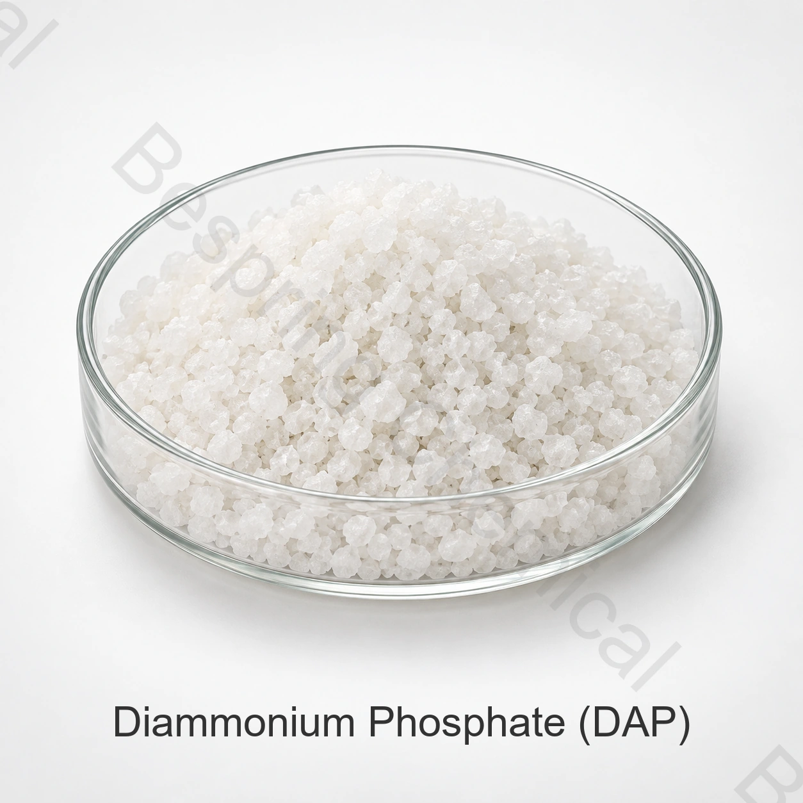

Марка и применение
Укажите точную идентичность, класс, гарантированный анализ питательных веществ, форму, применение, количество, упаковку и место назначения.
Сырьё для удобрений · Фосфатная соль · DAP
Диаммонийфосфат — источник азота и фосфора для внесения в почву и производства смесей удобрений.
Укажите требуемый состав, форму, применение, количество, упаковку, пункт назначения и документы.

Кратко о продукте
Диаммонийфосфат — источник азота и фосфора для внесения в почву и производства смесей удобрений.
18-46-0 — распространённое обозначение удобрения, а не гарантируемый состав любого DAP. Содержание питательных веществ устанавливается спецификацией предлагаемой марки. Химическая идентичность не подтверждает пригодность для конкретной культуры или регистрацию на рынке.
Руководство для закупщика
Сопоставьте состав, форму, документы и условия поставки для предлагаемой марки.
Укажите точную идентичность, класс, гарантированный анализ питательных веществ, форму, применение, количество, упаковку и место назначения.
Сопоставьте спецификацию, заявленный состав, COA, упаковку, Incoterms и сроки поставки.
Для растворимых систем укажите растворимость, предел нерастворимых веществ, состав исходной воды и концентрацию маточного раствора. Оцените совместимость до применения.
Запросите SDS, спецификацию или TDS, образец и партийный COA, данные прослеживаемости и документы для целевого рынка.
Предварительная оценка применений
Ниже приведены направления оценки. Применение конкретной марки зависит от состава, культуры, условий процесса и требований целевого рынка.
Укажите культуру, способ внесения и требования программы питания; выбор марки основывают на анализах почвы и рекомендациях агронома.
Согласуйте рецептуру, условия смешивания и критерии совместимости с другими компонентами.
Оцените выбранную марку в испытании, соответствующем почвенным условиям и производственному процессу.
Применение должно соответствовать маркировке, разрешённому назначению и требованиям целевого рынка.
Критерии выбора
Укажите форму продукта и метод определения основного показателя.
Согласуйте базис выражения содержания питательных веществ и используемые методы анализа.
Задайте необходимые физические показатели и пределы примесей в спецификации закупки.
Запросите документы для конкретного продукта, источника и целевого рынка.
Техническая документация по запросу
Для сравнения марок запросите в отделе продаж актуальную спецификацию или техническое описание TDS. Согласуйте редакцию, методы анализа и критерии приёмки.
Запросите спецификацию или TDS, паспорт безопасности SDS, методы испытаний, образец COA и COA конкретной партии.
Согласуйте гарантируемые показатели состава, базис их выражения, маркировку, регистрацию удобрения, требования к микроэлементам и целевому рынку.
Обзор Руководство ФАО по питанию растений, Руководство ФАО по спецификациям удобрений и Химические записи NIH PubChem. Пригодность удобрения и его регистрация зависят от культуры, почвы, рецептуры и юрисдикции.
Выбор и применение: Норму внесения и пригодность для культуры определяют по анализам почвы, воды и растительных тканей, рекомендациям агронома, испытаниям совместимости, маркировке и местным экологическим требованиям.
Хранение и обращение
Вопросы покупателей
Диаммонийфосфат — источник азота и фосфора для внесения в почву и производства смесей удобрений.
18-46-0 — распространённое обозначение удобрения, а не гарантируемый состав любого DAP. Содержание питательных веществ устанавливается спецификацией предлагаемой марки. Укажите базис выражения N, P2O5 и K2O или иной требуемый для маркировки базис. Сопоставляйте согласованную спецификацию с COA конкретной партии.
Запросите в отделе продаж актуальную спецификацию или техническое описание TDS для предлагаемой марки, методы испытаний и образец сертификата анализа COA.
Удобрительные, пищевые и технические марки имеют разные назначения, требования к примесям и документации. Они не являются автоматически взаимозаменяемыми.
Укажите продукт и форму, требуемый состав, применение, количество, упаковку, пункт назначения, необходимые документы, Incoterms и желаемую дату поставки.
Связанные разделы
Сравните фосфатные и калийные соли.
Обсудите актуальную спецификацию, документы, образцы и коммерческие требования.
Поддержка выбора источника и экспортной поставки химического сырья.
Удобрение по согласованной спецификации
Гарантируемые показатели, сорт и форма, применение удобрений, критические пределы, количество, упаковка, место назначения и список документов.